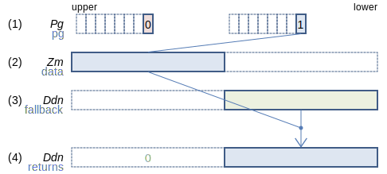
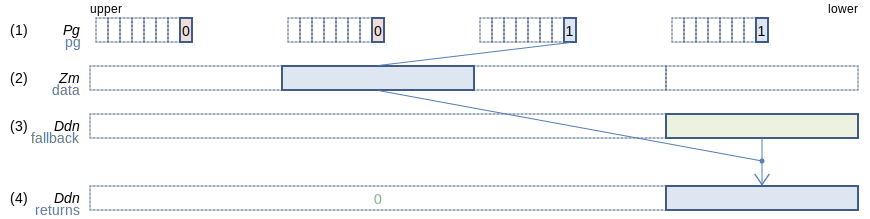
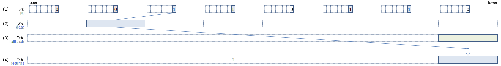
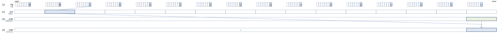
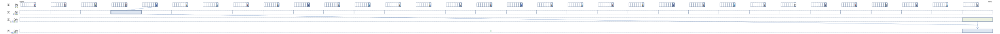

SVE Instruction List by Dougall Johnson
CLASTA (SIMD&FP scalar): Conditionally extract element after last to SIMD&FP scalar register
CLASTA Ddn, Pg, Ddn, Zm.D (SVE (SME
float64_t svclasta[_n_f64](svbool_t pg, float64_t fallback, svfloat64_t data)
int64_t svclasta[_n_s64](svbool_t pg, int64_t fallback, svint64_t data)
uint64_t svclasta[_n_u64](svbool_t pg, uint64_t fallback, svuint64_t data)
128-bit SVE
Find the last (leftmost) 64-bit element from (2) where the corresponding predicate bit in (1) is non-zero, then set (4) to the next element. If the last corresponding predicate bit is non-zero, set (4) to the first (rightmost) element from (1). If all corresponding predicate bits are zero, preserve the value from the first 64-bit element of (3), zeroing all other elements.
256-bit SVE
Find the last (leftmost) 64-bit element from (2) where the corresponding predicate bit in (1) is non-zero, then set (4) to the next element. If the last corresponding predicate bit is non-zero, set (4) to the first (rightmost) element from (1). If all corresponding predicate bits are zero, preserve the value from the first 64-bit element of (3), zeroing all other elements.
512-bit SVE
Find the last (leftmost) 64-bit element from (2) where the corresponding predicate bit in (1) is non-zero, then set (4) to the next element. If the last corresponding predicate bit is non-zero, set (4) to the first (rightmost) element from (1). If all corresponding predicate bits are zero, preserve the value from the first 64-bit element of (3), zeroing all other elements.
Larger sizes
1024-bit SVE
Find the last (leftmost) 64-bit element from (2) where the corresponding predicate bit in (1) is non-zero, then set (4) to the next element. If the last corresponding predicate bit is non-zero, set (4) to the first (rightmost) element from (1). If all corresponding predicate bits are zero, preserve the value from the first 64-bit element of (3), zeroing all other elements.
2048-bit SVE
Find the last (leftmost) 64-bit element from (2) where the corresponding predicate bit in (1) is non-zero, then set (4) to the next element. If the last corresponding predicate bit is non-zero, set (4) to the first (rightmost) element from (1). If all corresponding predicate bits are zero, preserve the value from the first 64-bit element of (3), zeroing all other elements.
Report mistakes or give feedback
Inspired by and based on the x86/x64 SIMD Instruction List by Daytime.